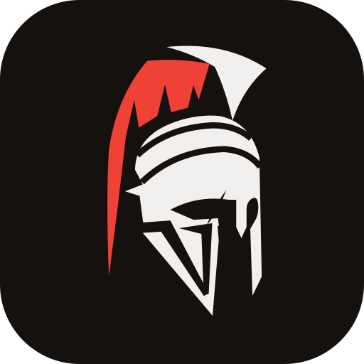

Privacy · Castra
Ultimo aggiornamento: 30 ottobre 2026
Castra è un'app gratuita e indipendente per i giocatori di Centurion Commander: meta dei tornei, classifiche del circuito, contapunti, mazzi e statistiche personali. Qui spieghiamo quali dati usa e perché.
Chi gestisce i dati
Titolare del trattamento è Andrea Baudino, che sviluppa e gestisce Castra. Per qualsiasi domanda o richiesta scrivi a centvrioncommander@gmail.com.
Senza account
Puoi usare Castra senza registrarti. Mazzi, partite e preferenze restano solo sul tuo dispositivo (nella memoria del browser) e non arrivano a noi. Per mostrarti i dati pubblici, l'app li chiede a questi servizi, che come ogni sito ricevono l'indirizzo IP del tuo dispositivo:
- GitHub, che ospita l'app e i dati del meta;
- Google Sheets, per la classifica del circuito;
- Google Firebase, per la banlist e i giocatori collegati;
- Scryfall, per i testi e le immagini delle carte.
Con un account
Se accedi (con Google o con email e password), Castra salva su Google Firebase: l'email dell'account (e, con Google, nome e foto del profilo), i tuoi mazzi, le partite registrate, le preferenze e il giocatore del circuito che hai collegato. Servono solo a ritrovare i tuoi dati su ogni dispositivo. I server di Google possono trovarsi anche fuori dall'Unione europea; Google li protegge con le clausole contrattuali standard e l'adesione all'EU-US Data Privacy Framework.
Cosa è visibile agli altri
Mazzi, partite e statistiche sono privati. Se colleghi il tuo nome nella classifica ("questo sono io"), sulla tua pagina giocatore diventano visibili a tutti la foto del tuo account Google e le scelte con cui la personalizzi (immagine di copertina e mazzo preferito). La tua email non viene mai mostrata.
I dati del circuito
Nomi dei giocatori, risultati e mazzi giocati ai tornei arrivano dai fogli pubblici degli organizzatori del circuito Centurion Commander: Castra li mostra e ne calcola le statistiche, per l'interesse della community a seguire il circuito. Se preferisci non comparire o vuoi correggere un dato, scrivici.
Niente tracciamento
Castra non usa strumenti di analisi, pubblicità o cookie di profilazione. Il browser conserva solo quello che serve all'app per funzionare (i tuoi dati locali e, se hai un account, la sessione di accesso).
Per quanto tempo e i tuoi diritti
I dati dell'account restano finché l'account esiste. Da Profilo puoi esportarli (backup e CSV delle partite) ed eliminare l'account, che cancella tutto dal cloud e dal dispositivo. Puoi inoltre chiedere di accedere ai tuoi dati, correggerli o opporti al loro uso scrivendo all'indirizzo sopra, e presentare reclamo al Garante per la protezione dei dati personali (garanteprivacy.it).
Last updated: 30 October 2026
Castra is a free, independent app for Centurion Commander players: tournament meta, circuit rankings, life counter, decks and personal stats. This page explains which data it uses and why.
Who handles the data
The data controller is Andrea Baudino, who develops and runs Castra. For any question or request, write to centvrioncommander@gmail.com.
Without an account
You can use Castra without signing up. Decks, games and preferences stay on your device only (in the browser's storage) and never reach us. To show you public data, the app asks these services for it, which like any website receive your device's IP address:
- GitHub, which hosts the app and the meta data;
- Google Sheets, for the circuit ranking;
- Google Firebase, for the banlist and the linked players;
- Scryfall, for card texts and images.
With an account
If you sign in (with Google or with email and password), Castra stores on Google Firebase: the account's email (and, with Google, your profile name and picture), your decks, recorded games, preferences and the circuit player you linked. They are only used to give you your data on every device. Google's servers may be outside the European Union; Google protects them with standard contractual clauses and the EU-US Data Privacy Framework.
What others can see
Decks, games and stats are private. If you link your name in the ranking ("this is me"), your Google account picture and the choices you customise your player page with (cover image and favourite deck) become visible to everyone. Your email is never shown.
Circuit data
Player names, results and decks played at tournaments come from the public sheets of the Centurion Commander circuit organisers: Castra shows them and computes their statistics, in the community's interest in following the circuit. If you'd rather not appear, or want to correct something, write to us.
No tracking
Castra uses no analytics, advertising or profiling cookies. The browser only keeps what the app needs to work (your local data and, with an account, your sign-in session).
How long, and your rights
Account data is kept as long as the account exists. From Profile you can export it (backup and games CSV) and delete the account, which erases everything from the cloud and the device. You can also ask to access, correct or object to the use of your data by writing to the address above, and lodge a complaint with your data protection authority.